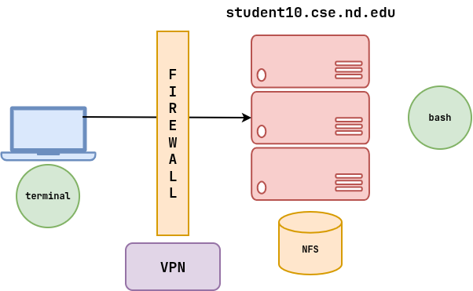
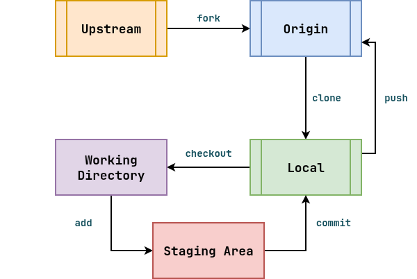
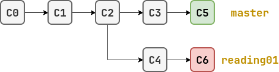

Logistics¶
-
Office hours with TAs maybe sporadic this week, times still being finalized.
-
Overview: Review what git is and how to use it to submit Reading 01 (note: there is a grace period).
-
Canvas: nothing to submit (GitHub only).
-
Python3: make sure to use provided
python3otherwise, there could be issues (one fixed this morning)
SSH: Model¶

-
Local terminal is just an interface for remote process (bash).
-
NFS is used to share files between machines (same file system).
-
Student machines used for testing and grading (but you can use your local computer if you wish).
-
Firewall: use VPN when off campus.
Git: Concepts¶
Git is a free and open source distributed version control system designed to handle everything from small to very large projects with speed and efficiency.
-
Journal (record transactions, diary)
-
Time Machine (checkout different versions)
-
Shared Space (use for collaborating with TAs)

Git: Analogy¶
| Transaction ID | Operation | Amount | Description |
|---|---|---|---|
| 01 | deposit | $100 | Campus Job |
| 02 | withdrawal | $25 | Newfs |
| $75 | Checkpoint |
Git: Model¶

Git: Branches¶

Create new branch and switch to it
$ git switch master
$ git pull --rebase
$ git switch -c reading01
Git: Demonstration (Clone, Navigation)¶
Clone TA Repository
$ git clone git@github.com:nd-cse-20589-fa26/assignments-ewaelde.git
Move folder to /tmp (discuss tab-completion)
$ mv assignments-ewaelde /tmp
Go to that folder
$ cd /tmp/assignments-ewaelde
Go to previous location
$ cd -
Git: Demonstration (Journal, Branch)¶
View journal entries
$ git log
View which branch (mention Homework 01: Just For Fun)
$ git branch
Create new branch
$ git switch -c reading01
$ git branch
Git: Demonstration (Reading 01)¶
Create empty file
$ touch answers.json
Edit answers.json
$ vim answers.json
{
"q01": ["ls"]
}
Move answers.json to reading01 folder
$ mv answers.json reading01
$ cd reading01
Check quiz answers (remind students of Python3 configuration)
$ ../.scripts.check.py
View state of git repo
$ git status
Git: Demonstration (Commit)¶
Add answers.json to staging area
$ git add answers.json
$ git status
Record changes to journal
$ git commit -m "Reading 01: first attempt"
$ git log
$ git show
Edit answers.json
$ vim answers.json
{
"q01": ["ls","asdf","fdsa"]
}
Check quiz answers (interpret results)
$ ../.scripts.check.py
Git: Demonstration (Checkout)¶
View changes
$ git status
$ git diff
Go back to commited version
$ git restore answers.json
Switch to master branch (file is not there!)
$ git switch master
$ ls
$ git switch reading01
$ ls
Send changes to GitHub (Discuss PR workflow)
$ git push -u origin reading01
-
Can use website to generate JSON.
-
Can commit and push as many times as you want (only grade the final score).